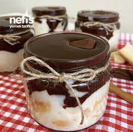

Kaç Kişilik:5 kişilik Hazırlama Süresi: 45 dakika Pişirme süresi: 20 dakika
Yalancı Profiterol İçin Malzeme Listesi ...
- 1 litre süt
- Bir su bardağı toz şeker
- 100 gr sıvı yağ
- 4 su bardağı un
Yalancı Profiterol Nasıl Yapılır?
- Öncelikle yağı, şekeri ve sütü bir tencereye alın
- Ardından unu yavaş yavaş karışıma ekleyin
- Karışımın saumasını bekleyin
- Soğuyan karışıma krem şanti ilave edip mikser ile karştırın
- Karışımı küçük kablara başaltıp buzdolabında en az 1 saat bekletin
- İsteğe göre üzerini fındık, fıstık ile süsleyebilirsiniz
Afiyet olsun